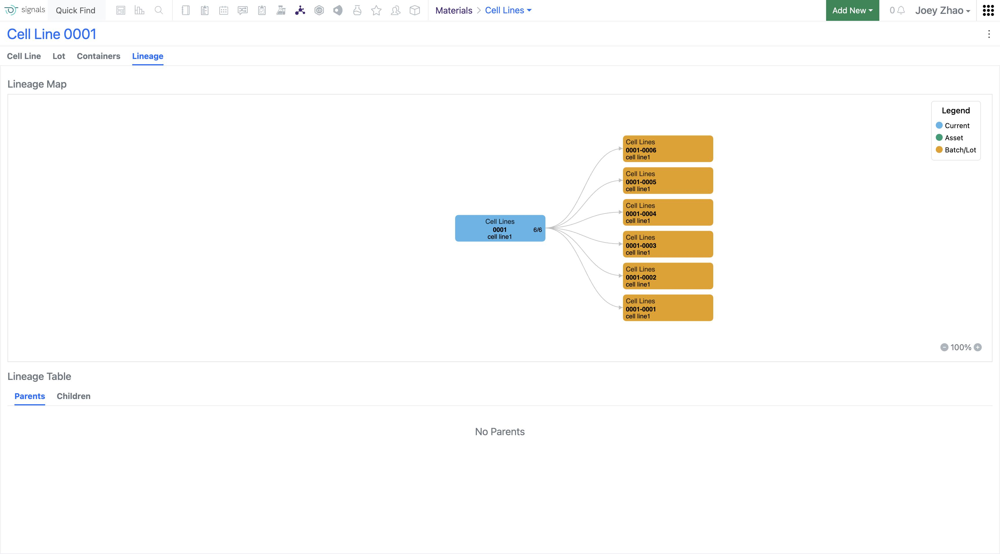
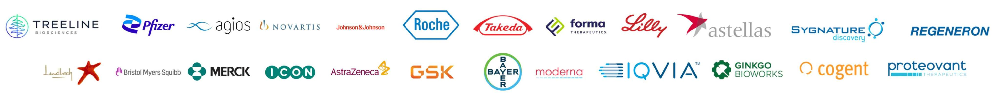

先认清“是什么”First, identify the material
黑色节点是材料本身。例子里的病毒载体有三种上游质粒；它的来源不是单一的一条线。Black nodes represent materials. The viral vector in this example has three upstream plasmids, so its origin is not a single chain.

02 / SIGNALS NOTEBOOK · MATERIAL LINEAGE02 / 实验材料追溯设计
I designed a map connecting materials, batches and experiment records so scientists can trace how their research materials were made.我将材料来源、批次和实验记录连成一张关系图，帮助科学家查清实验材料的来龙去脉。
Explore the design看看我怎么设计 ↓一个抗体连着上游的 DNA 材料、细胞和培养液。科学家要查的不只是“它是什么”，还有“怎么得到它、用了哪一批、在哪个实验里”。这才是谱系图要接住的任务。An antibody connects back to DNA materials, cells and culture fluid. Scientists need more than an identity: how was it made, which batch was used, and in which experiment? That is the task behind the lineage map.
研究中登记的一种对象，
例如一株细胞。A registered research entity,
such as a cell line.
同一种材料的具体批次，
有各自的记录。A specific lot of that material,
with its own record.
把来源和衍生关系连起来，
看清谁从谁而来。The source and derivative links
that show what came from what.
材料工作流 · 谱系交互 · 界面设计Material workflows · Lineage interactions · Interface design

Child materials can be registered directly from an experiment table, reusing existing information. During investigation, the direction reverses: a scientist may have only a material ID and need to recover its origins, batches and related experiments.登记衍生材料时，可以直接沿用实验材料表里的信息。到了追溯阶段，问题反过来了：科学家可能只有一个材料编号，需要找回它的来源、批次和关联实验。
用户手里有材料编号，
就该能从材料开始查。When the user has a material ID,
the investigation should start there.
原始方案把材料智能文件夹作为统一入口。在材料详情里增加谱系页签，保留已有的属性和批次页面。用户进入熟悉的记录后，就能继续查关系。The proposal uses the Materials Smart Folder as a common entry point. A Lineage tab sits inside material details, alongside existing properties and lots. Researchers can continue into relationships from a familiar record.
一份材料可以做出多批。每一批，又可能进入不同的实验。只把同名材料连起来，仍然找不回那一次实验的来路。One material can have several batches, each used in different experiments. Connecting names alone does not recover the path behind a particular experiment.
黑色节点是材料本身。例子里的病毒载体有三种上游质粒；它的来源不是单一的一条线。Black nodes represent materials. The viral vector in this example has three upstream plasmids, so its origin is not a single chain.
黄色节点是具体批次。两个批次分别通向不同的细胞材料，往后又继续分批。追到材料，还不等于追到了实验。Yellow nodes represent batches. Two batches lead to different cell materials, which branch into further lots. Reaching a material is not yet reaching the experiment.
我的方案把谱系放进材料详情，同时保留批次与关联表格。图谱负责指路，具体身份和记录仍然有地方核对。My proposal places lineage inside material details while retaining lots and related tables. The graph gives direction; records provide the detail needed to check it.
看这怎样进入界面See it in the interface把对照落到具体任务上。怎么找到材料，怎样沿关系查记录，最后带走哪些信息？这几个问题，决定图谱在 Signals 里应该怎样工作。I compare the tasks around the graph. How does someone find a material, follow a relationship into a record, and take the relevant information away? Those questions shape the workflow in Signals.
生物学家熟悉沿细胞发育关系探索。黄色路径让当前分支更突出；值得借鉴的是探索方式。Biologists are familiar with exploring cell-development lineages. The yellow path emphasizes the current branch. The useful precedent is the way people explore.
它把下游分支和当前对象的属性放在一起。我借鉴的是：不必每次都看大图，也能从材料记录直接找到关联对象。It pairs downstream branches with the selected object’s properties. I took away the value of reaching related entities directly from a material record, without always needing a full graph.
左侧控制筛选与显示代数，下方保留选中对象、祖先和后代记录。关系探索与逐条核验各有位置。Controls on the left set filters and generations. The selected item and ancestor/descendant records remain below the graph.

材料登记连接对象与批次；关系图支持查看上下游并跳转到关联对象。Registered entities connect to batches. Entity Map supports upstream and downstream exploration and navigation to related entities.
WormWeb、LabKey、IDBS 是前期调研中的参考；Benchling 为后续补充。WormWeb, LabKey and IDBS informed the original research. Benchling is a later addition.
从材料进入。用图看关系。
需要具体信息时，仍能回到表格和记录。Start with the material. Follow the graph.
Keep tables and records within reach.
材料智能文件夹负责查找，详情页负责查看一份材料。谱系作为其中的页签出现，让新能力接上原来的操作习惯。The Materials Smart Folder supports discovery; the detail page holds one material. Lineage appears as a tab within that record, extending the existing navigation.
Miro 方案里，点击节点逐步展开关系，下方的祖先与后代表格同步更新。悬停看属性，点击进入材料详情；遇到无权限记录时给出提示。把这些状态做清楚，才能让图谱里的探索接上实际操作。The Miro flow expands relationships on demand and updates the ancestor and descendant tables with the visible nodes. Hover reveals properties; clicking opens the material; restricted records show a notice. These states connect exploration to real actions.
图里能顺着分支看来源与去向；表格方便逐条核对，也保留导出入口。这意味着维护两种视图，但能照顾探索和核验两种任务。后台生成报告还需要额外服务，团队把 PDF 与 API 导出拆成后续需求。The map supports following origins and descendants; the table supports checking records and accessing export. Maintaining both views adds work, but serves both exploration and verification. Server-generated reports needed additional infrastructure, so the team separated PDF and API exports into follow-up work.
This later exploration revisits information hierarchy and selection between the graph and records. It is shown separately from the original project.这版后续探索继续调整信息层级，以及图谱与记录之间的选中关系，单独放在这里，方便和原始项目区分。
我梳理属性面板的需求，整理并设计了几套交互方案。Adrian 在 Miro 中参与提问和讨论，我负责方案设计与原型迭代。I organized the requirements and designed several interaction options for the properties panel. Adrian asked questions and discussed them with me in Miro; I owned the design and prototype iterations.
我推荐第三种：先筛选，再勾选。材料类型和属性放在一起，先缩小查找范围。我随后更新原型，补上“全选／全不选”，让批量调整更直接。I recommended Option 3: filter first, then select. It brought material types and attributes together while narrowing the list. I then updated the prototype with select all / select none for batch changes.
保留选择的自由
把重复操作交给批量处理Keep the choice
Batch the repetitive work
实际产品用“全部添加 / 全部移除”（Add All / Remove All）完成批量调整，已选属性还可以排序。Add All and Remove All handle bulk changes. Selected properties can also be reordered.
产品经理和人力团队协调公司内部实验室科研人员，并与欧洲、美国客户开展线上访谈与任务验证。这个数字衡量的是材料谱系追溯任务。PM and HR coordinated internal laboratory scientists, alongside online interviews and task validation with European and US clients. This result measures the material-lineage tracing task.
净推荐值提升 5 分Net Promoter Score increased by 5 points
面向 1000 多名用户开展线上问卷，了解他们是否愿意推荐这项功能。An online survey covering over 1,000 users measured their willingness to recommend the feature.
我与美国产品经理 Adrian Papas、10 位研发工程师合作，在约 5 个月中负责材料工作流、线框、交互原型、用户测试与最终界面。原始提案保留了从材料入口到图谱、关联表格与导出的完整设计过程。I worked with US-based PM Adrian Papas and ten engineers over approximately five months, covering material workflows, wireframes, interaction prototypes, user testing and final UI. The original proposal preserves the path from material discovery to the graph, related tables and export.
Signals Notebook